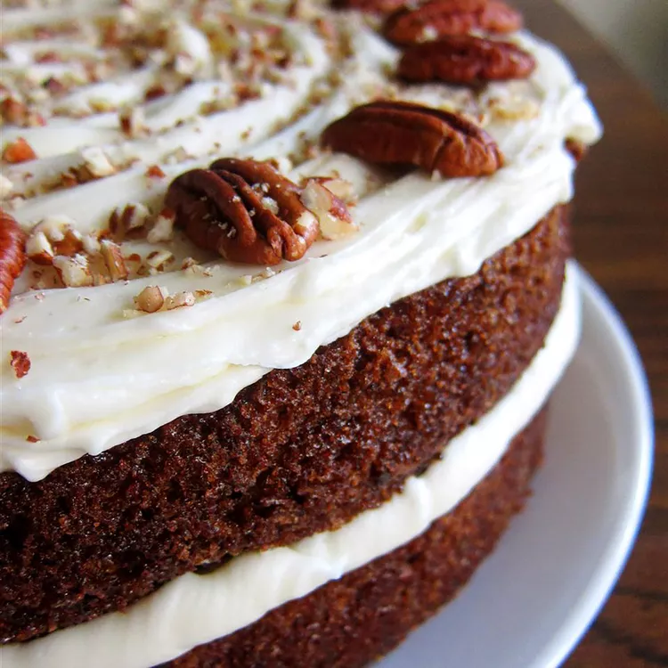
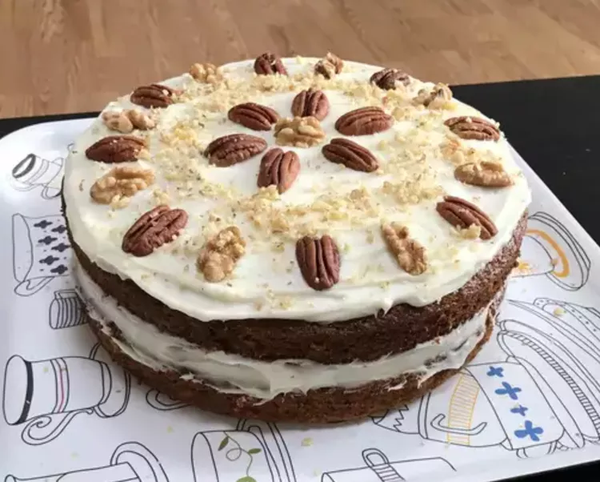
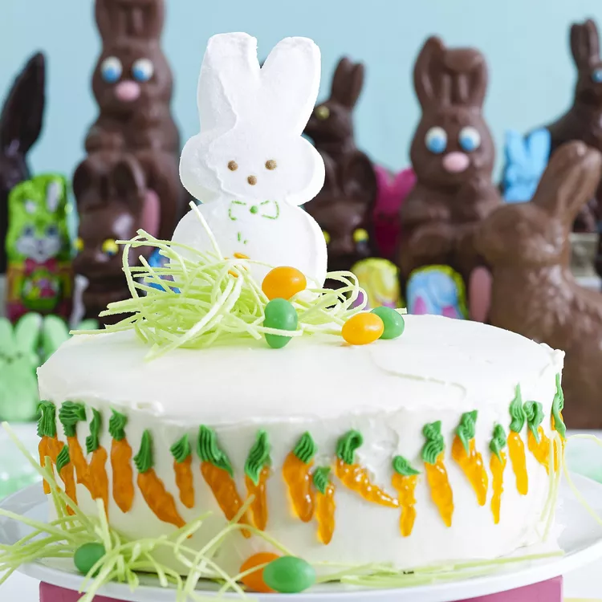

Carrot Cake
This carrot cake is my favorite recipe, and I have tried many carrot cakes! If you don't like pecans, feel free to leave them out.
Our top-rated carrot cake recipe is moist, light, fluffy, and topped with a rich cream cheese frosting. What's not to love?

How to Make Carrot Cake
You'll find a detailed ingredient list and step-by-step instructions in the recipe below, but let's go over the basics:
What's In Carrot Cake?
These are the ingredients you'll need to make your new go-to carrot cake recipe:
- Sugars: You'll need white sugar for the cake and confectioners' sugar for the frosting.
- Oil: A neutral oil, such as vegetable oil, adds moisture without imparting flavor.
- Eggs: Four whole eggs lend moisture and help bind the carrot cake batter together.
- Vanilla: Two teaspoons of vanilla extract for the cake (and one teaspoon for the frosting) enhances the flavor.
- Flour: All-purpose flour creates structure and brings the batter together.
- Flour: All-purpose flour creates structure and brings the batter together.
- Cinnamon: Ground cinnamon adds that warm, cozy flavor you associate with carrot cake.
- Salt: Salt enhances the flavors of the other ingredients, but it won't make the cake taste salty.
- Carrots: Of course, you'll need grated carrots!
- Pecans: Chopped pecans give the cake and frosting a pleasant crunch.
- Butter and cream cheese: Butter and cream cheese are the key ingredients in the light and fluffy cream cheese frosting.
How to Make Carrot Cake Step-By-Step
Here's a very brief overview of what you can expect when you make homemade carrot cake:
- Make the batter: Beat the wet ingredients together, then mix in the dry ingredients. Stir in the carrots and fold in the pecans.
- Bake the cake: Pour the batter into the prepared cake pan or pans. Bake in the preheated oven until a toothpick comes out clean.
- Frost the cake: Beat the frosting ingredients together until smooth and creamy. Stir in the pecans. Frost the (completely cooled) cake.
How to Decorate Carrot Cake
Looking for impressive cake decorating ideas? Get inspiration from these Allrecipes community members:


Does Carrot Cake Need to Be Refrigerated?
Yes, carrot cake should be refrigerated. Since it's frosting with a fluffy cream cheese frosting, it shouldn't sit at room temperature for more than two hours at a time.
How Long Does Carrot Cake Last?
Store the frosted cake cake in an airtight container in the refrigerator for up to one week.
Can You Freeze Carrot Cake?
You can freeze unfrosted carrot cake for up to three months. Simply wrap the cooled cake in at least one layer of storage wrap, then at least one layer of foil. Thaw in the fridge overnight and frost according to the recipe.
Allrecipes Community Tips and Praise
"This recipe is fabulous," according to Joyce. "I made it exactly as written and it has been a favorite of my family for years. I even make it for my vegan granddaughter by using an egg substitute."
"I have tried various carrot cakes, but this by far was [our] favorite," says one Allrecipes community member. "It was light, airy, moist and not too sweet. I chose to use brown sugar, raisins, and extra cinnamon."
"Amazing carrot cake recipe," raves Stefanie. "I wouldn't change a thing! A tip: Squeeze as much of the juice out of the carrots as you can before mixing it in and the cake won't be overly wet and soggy in the middle."
Ingredients
Cake:
- 2 cups white sugar
- 1 ¼ cups vegetable oil
- 4 eggs
- 2 teaspoons vanilla extract
- 2 cups all-purpose flour
- 2 teaspoons baking soda
- 2 teaspoons baking powder
- 2 teaspoons ground cinnamon
- ½ teaspoon salt
- 3 cups grated carrots
- 1 cup chopped pecans
Frosting:
- ½ cup butter, softened
- 8 ounces cream cheese, softened
- 4 cups confectioners' sugar
- 1 teaspoon vanilla extract
- 1 cup chopped pecans
Directions
Steps
- Preheat the oven to 350 degrees F (175 degrees C). Grease and flour a 9x13 inch pan.
- Beat sugar, oil, eggs, and 2 teaspoons vanilla together in a large bowl with an electric mixer until well combined. Mix in flour, baking soda, baking powder, cinnamon, and salt. Stir in carrots. Fold in pecans. Pour into the prepared pan.
- Bake in the preheated oven until a toothpick inserted into the center of the cake comes out clean, about 40 minutes. Let cool in the pan for 10 minutes, then turn out onto a wire rack and cool completely.
- To make the frosting: Beat butter, cream cheese, confectioners' sugar, and 1 teaspoon vanilla together in a large bowl with an electric mixer until smooth and creamy. Stir in chopped pecans. Frost the cooled cake.